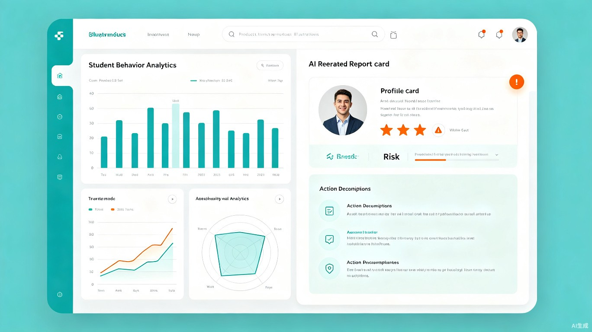

班主任每天面对复杂的学生问题，却缺乏科学化的决策工具。纸质档案、Excel表格、个人经验——这三件套撑起了班级管理的全部。
学生信息、操行分、请假记录、心理状态分散在不同表格中，无法联动分析，历史数据沦为"死数据"。
面对违纪屡教不改、情绪异常、厌学等问题，班主任只能"拍脑袋"处理，缺乏专家级的研判依据与处置方案。
学生心理危机信号隐藏在聊天记录、请假频次、违纪行为中，人工难以早期识别，往往错过最佳干预时机。
系统核心差异化能力。基于私有化教育垂直大模型，通过 RAG 检索增强技术深度融合全量学生档案与教育专家知识库，为班主任输出个性化、可落地的干预方案。
以学生全量档案数据为底座，覆盖信息管理、操行分考评、手机管控、请假流程、心理预警等全场景。
flowchart TB
subgraph AI["AI 核心层"]
LLM["教育大模型底座
LoRA微调"]
RAG["RAG检索引擎
Milvus/PGVector"]
KB["知识库中台
公共库+学生档案库"]
end
subgraph App["业务应用层"]
M1["学生信息管理"]
M2["操行分管理"]
M3["请假/收手机"]
M4["心理预警中心"]
M5["AI聊天助手"]
M6["报表统计"]
end
subgraph Data["数据层"]
DB["SQL Server
核心业务数据"]
VecDB["向量数据库
知识库向量"]
File["本地文件存储
图片/文档"]
end
App -->|"行为数据同步"| Data
Data -->|"档案召回"| AI
AI -->|"研判方案/预警"| App
KB -->|"向量索引"| VecDB
DB -->|"结构化数据"| KB
Excel 批量导入导出，学号唯一校验，逻辑删除与回收站，信息变更自动同步至大模型档案库。
快捷/手动双模式录入，纪检委员审核，图片附件懒加载，审核通过自动同步行为数据标签。
剩余天数自动递减，到期自动提醒可发放，所有变动全程留痕，联动操行分规则自动累加。
到达开始时间自动改为"离校"，结束自动恢复"在校"，请假天数自动累加至收手机天数。
聚合聊天文本、违纪记录、请假频次，生成学生画像，轻度/中度/重度三级预警，支持导出名单。
学生专属对话界面，敏感词过滤，聊天记录持久化，同步至心理预警模块作为情绪分析数据源。
学习/纪律/卫生三类规则，累加/固定天数双模式，班长统一管理，各委员分类型录入。
操行分排名、手机收取趋势、出勤率、AI 研判高频问题等多维报表，支持 Excel/PDF 导出。
8 级角色权限，后端接口强制校验，前端动态渲染菜单与按钮，学生隐私数据严格隔离。
班主任仅需 3 步，即可获取融合学生全量档案与教育专家知识的个性化干预方案。

将班级管理流程全面数字化，并通过教育专属大模型实现"智能化"跃迁。AI 辅助班主任 3 步生成个性化学生问题干预方案，将棘手问题处置周期从数天缩短至数分钟；心理预警模块自动聚合多源数据识别高风险学生，实现从"事后处理"到"事前预防"的转变。
聚焦职业教育这一国家人才培养的重要阵地，通过 AI 技术助力青少年心理健康守护与行为矫正，推动中职院校班级管理规范化、科学化。系统内置教育合规校验与隐私脱敏机制，确保技术向善，为"AI+教育"的安全落地提供可复制、可推广的实践样本。